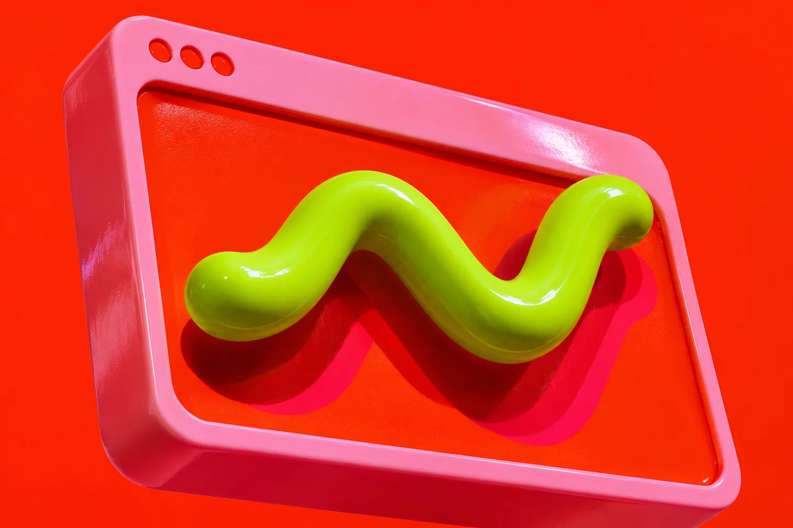
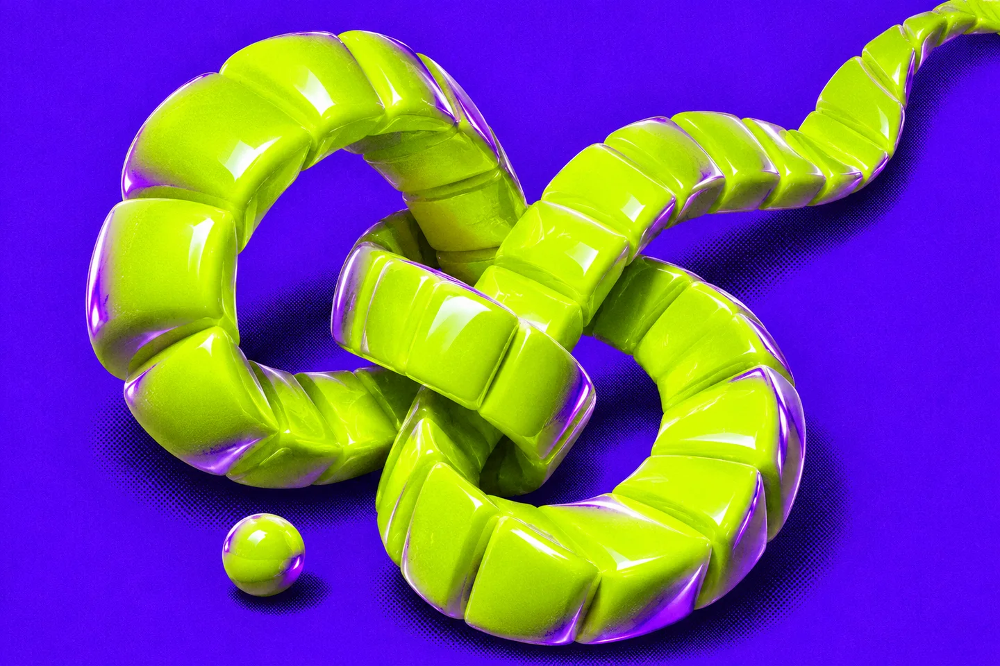

Web / InteractionThe Website
A place to experiment with motion, type and the web itself.
Creative software developer
I build systems and interfaces.
Some get a little weird.

About me
I’m xbl1e, a software developer. I like building fast backend systems and interfaces with character. That can mean chasing a bottleneck in a sync engine or tuning how an interaction feels.